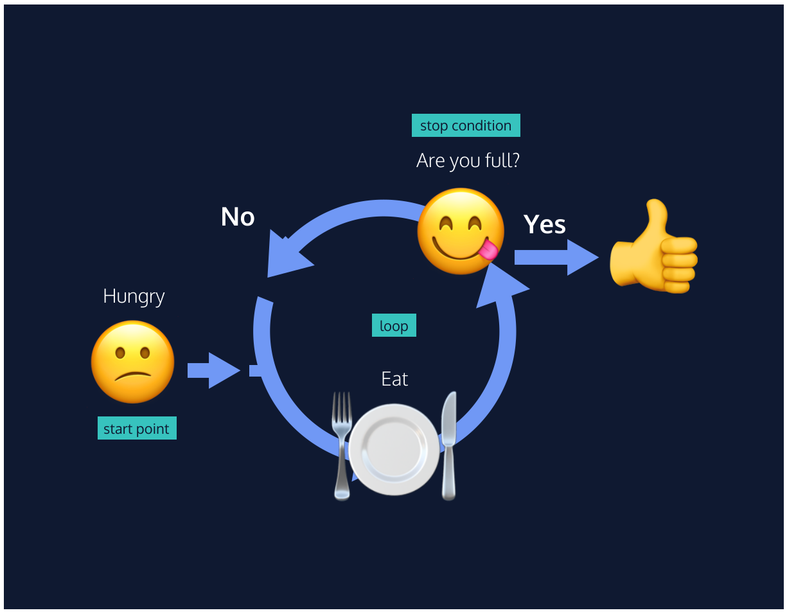

A loop is a programming tool that repeats a set of instructions until a specified condition, called a stopping condition is reached. As a programmer, you’ll find that you rely on loops all the time! You’ll hear the generic term iterate when referring to loops; iterate simply means “to repeat”.
When we need to reuse a task in our code, we often bundle that action in a function. Similarly, when we see that a process has to repeat multiple times in a row, we write a loop. Loops allow us to create efficient code that automates processes to make scalable, manageable programs.
As illustrated in the diagram, loops iterate or repeat an action until a specific condition is met. When the condition is met, the loop stops and the computer moves on to the next part of the program.

We often perform a task based on a condition. For example, if the weather is nice today, then we will go outside. If the alarm clock rings, then we’ll shut it off. If we’re tired, then we’ll go to sleep.
In programming, we can also perform a task based on a condition using an if statement:
if (true) {
console.log('This message will print!');
}
// Prints "This message will print!"
Notice in the example above, we have an if statement. The if statement is composed of:
if keyword followed by a set of parentheses () which is followed by a code block, or block statement, indicated by a set of curly braces {}.(), a condition is provided that evaluates to true or false.true, the code inside the curly braces {} runs, or executes. false, the block won’t execute.Let’s make an if statement!
Using the let keyword, declare a variable named sale. Assign the value true to it.
Create an if statement. Provide the if statement a condition of sale. Inside the code block of the if statement, console.log() the string 'Time to buy!'.
Notice that the code inside the if statement ran, since 'Time to buy!' was logged to the console.
Below the sale variable declaration, but before the if statement, reassign sale to false. Run your code and observe what happens, we’ll be changing this behavior in the
next exercise.
In the previous exercise, we used an if statement that checked a condition to decide whether or not to run a block of code. In many cases, we’ll have code we want to run if our condition evaluates to false.
If we wanted to add some default behavior to the if statement, we can add an else statement to run a block of code when the condition evaluates to false. Take a look at the inclusion of an
else statement:
if (false) {
console.log('The code in this block will not run.');
} else {
console.log('But the code in this block will!');
}
// Prints "But the code in this block will!"
An else statement must be paired with an if statement, and together they are referred to as an if...else statement. In the example above, the else statement:
else keyword following the code block of an if statement.{}.else statement code block will execute when the if statement’s condition evaluates to false.if...else statements allow us to automate solutions to yes-or-no questions, also known as binary decisions.
Add an else statement to the existing if statement.
Inside the code block of the else statement, console.log() the string 'Time to wait for a sale.'
When writing conditional statements, sometimes we need to use different types of operators to compare values. These operators are called comparison operators.
Here is a list of some handy comparison operators and their syntax:
<><=>====!==Comparison operators compare the value on the left with the value on the right. For instance:
10 < 12 // Evaluates to true
It can be helpful to think of comparison statements as questions. When the answer is “yes”, the statement evaluates to true, and when the answer is “no”, the statement evaluates to false. The code above would
be asking: is 10 less than 12? Yes! So 10 < 12 evaluates to true.
We can also use comparison operators on different data types like strings:
'apples' === 'oranges' // false
In the example above, we’re using the identity operator (===) to check if the string 'apples' is the same as the string 'oranges'. Since the two strings are not the same, the comparison
statement evaluates to false.
All comparison statements evaluate to either true or false and are made up of:
>, <, <=,>=,===).Let’s practice using these comparison operators!
Using let, create a variable named hungerLevel and set it equal to 7.
Write an if...else statement using a comparison operator. The condition should check if hungerLevel is greater than 7. If so, the conditional statement should log, 'Time to eat!'.
Otherwise, it should log 'We can eat later!'.
Play around with the condition by tweaking the comparison of hungerLevel by using different operators such as <=,>=,>, and <.
Working with conditionals means that we will be using booleans, true or false values. In JavaScript, there are operators that work with boolean values known as logical operators. We can use logical
operators to add more sophisticated logic to our conditionals. There are three logical operators:
&&)||)!)When we use the && operator, we are checking that two things are true:
if (stopLight === 'green' && pedestrians === 0) {
console.log('Go!');
} else {
console.log('Stop');
}
When using the && operator, both conditions must evaluate to true for the entire condition to evaluate to true and execute. Otherwise, if either condition is false,
the && condition will evaluate to false and the else block will execute.
If we only care about either condition being true, we can use the || operator:
if (day === 'Saturday' || day === 'Sunday') {
console.log('Enjoy the weekend!');
} else {
console.log('Do some work.');
}
When using the || operator, only one of the conditions must evaluate to true for the overall statement to evaluate to true. In the code example above, if either day === 'Saturday' or day === 'Sunday' evaluates to true the if‘s condition will evaluate to true and its code block will execute. If the first condition in an || statement evaluates
to true, the second condition won’t even be checked. Only if day === 'Saturday' evaluates to false will day === 'Sunday' be evaluated. The code in the else statement
above will execute only if both comparisons evaluate to false.
The ! not operator reverses, or negates, the value of a boolean:
let excited = true;
console.log(!excited); // Prints false
let sleepy = false;
console.log(!sleepy); // Prints true
Essentially, the ! operator will either take a true value and pass back false, or it will take a false value and pass back true.
Logical operators are often used in conditional statements to add another layer of logic to our code.
Using let, create a variable named mood and set it equal to 'sleepy', create a variable name tirednessLevel and set it equal to 6.
Let’s create an if...else statement that checks if mood is 'sleepy' and tirednessLevel is greater than 8.
If both conditions evaluate to true, then console.log() the string 'time to sleep'. Otherwise, we should console.log() 'not bed time yet'.
Play around with the || operator and the ! operator! What happens if you negate the value of the entire statement with ! and switch to || instead of &&?
In the spirit of using short-hand syntax, we can use a ternary operator to simplify an if...else statement.
Take a look at the if...else statement example:
let isNightTime = true;
if (isNightTime) {
console.log('Turn on the lights!');
} else {
console.log('Turn off the lights!');
}
We can use a ternary operator to perform the same functionality:
isNightTime ? console.log('Turn on the lights!') : console.log('Turn off the lights!');
In the example above:
isNightTime, is provided before the ?.? and are separated by a colon :.true, the first expression executes.false, the second expression executes. Like if...else statements, ternary operators can be used for conditions which evaluate to true or false.
We can add more conditions to our if...else with an else if statement. The else if statement allows for more than two possible outcomes. You can add as many else if statements as
you’d like, to make more complex conditionals!
The else if statement always comes after the if statement and before the else statement. The else if statement also takes a condition. Let’s take a look at the syntax:
let stopLight = 'yellow';
if (stopLight === 'red') {
console.log('Stop!');
} else if (stopLight === 'yellow') {
console.log('Slow down.');
} else if (stopLight === 'green') {
console.log('Go!');
} else {
console.log('Caution, unknown!');
}
The else if statements allow you to have multiple possible outcomes. if/else if/else statements are read from top to bottom, so the first condition that evaluates to true from the top to bottom is the block that gets executed.
In the example above, since stopLight === 'red' evaluates to false and stopLight === 'yellow' evaluates to true, the code inside the first else if statement is executed.
The rest of the conditions are not evaluated. If none of the conditions evaluated to true, then the code in the else statement would have executed.
Let’s create a program that keeps track of the way the environment changes with the seasons. Write a conditional statement to make this happen!
Using let, create a variable named season and set it equal to 'summer'.
Let’s add an else if statement that checks if season is equal to 'winter'.
Inside the code block of the else if statement, add a console.log() that prints the string 'It is winter! Everything is covered in snow.'.
Add another else if statement that checks if season is equal to 'fall'.
Inside the code block of the else if statement you just created, add a console.log() that prints the string 'It is fall! Leaves are falling!'.
Add a final else if statement that checks if season is equal to 'summer'.
Inside the code block of the else if statement you just created, add a console.log() that prints the string 'It is sunny and warm because it is summer!'.
else if statements are a great tool if we need to check multiple conditions. In programming, we often find ourselves needing to check multiple values and handling each of them differently. For example:
let groceryItem = 'papaya';
if (groceryItem === 'tomato') {
console.log('Tomatoes are $0.49');
} else if (groceryItem === 'papaya'){
console.log('Papayas are $1.29');
} else {
console.log('Invalid item');
}
In the code above, we have a series of conditions checking for a value that matches a groceryItem variable. Our code works fine, but imagine if we needed to check 100 different values! Having to write that many else if statements sounds like a pain!
A switch statement provides an alternative syntax that is easier to read and write. A switch statement looks like this:
let groceryItem = 'papaya';
switch (groceryItem) {
case 'tomato':
console.log('Tomatoes are $0.49');
break;
case 'lime':
console.log('Limes are $1.49');
break;
case 'papaya':
console.log('Papayas are $1.29');
break;
default:
console.log('Invalid item');
break;
}
// Prints 'Papayas are $1.29'
switch keyword initiates the statement and is followed by ( ... ), which contains the value that each case will compare. In the example, the value or expression of the switch statement is groceryItem.{ ... }, there are multiple cases. The case keyword checks if the expression matches the specified value that comes after it. The value following the first case is 'tomato'. If the value of groceryItem equalled 'tomato', that case‘s console.log() would run.groceryItem is 'papaya', so the third case runs— Papayas are $1.29 is logged to the console.break keyword tells the computer to exit the block and not execute any more code or check any other cases inside the code block. Note: Without the break keyword at the end of each case, the program
would execute the code for all matching cases and the default code as well. This behavior is different from if/else conditional statements which execute only one block of code. switch statement, there is a default statement. If none of the cases are true, then the code in the default statement will run.Let’s change the Else If statement we write before to a switch statement
Way to go! Here are some of the major concepts for conditionals:
if statement checks a condition and will execute a task if that condition evaluates to true.if...else statements make binary decisions and execute different code blocks based on a provided condition.else if statements.<, >, <=, >=, ===, and !== can compare two values.&&, or “and”, checks if both provided expressions are truthy.||, or “or”, checks if either provided expression is truthy.!, switches the truthiness and falsiness of a value.if...else statements. switch statement can be used to simplify the process of writing multiple else if statements. The break keyword stops the remaining cases from being checked and executed in a
switch statement.